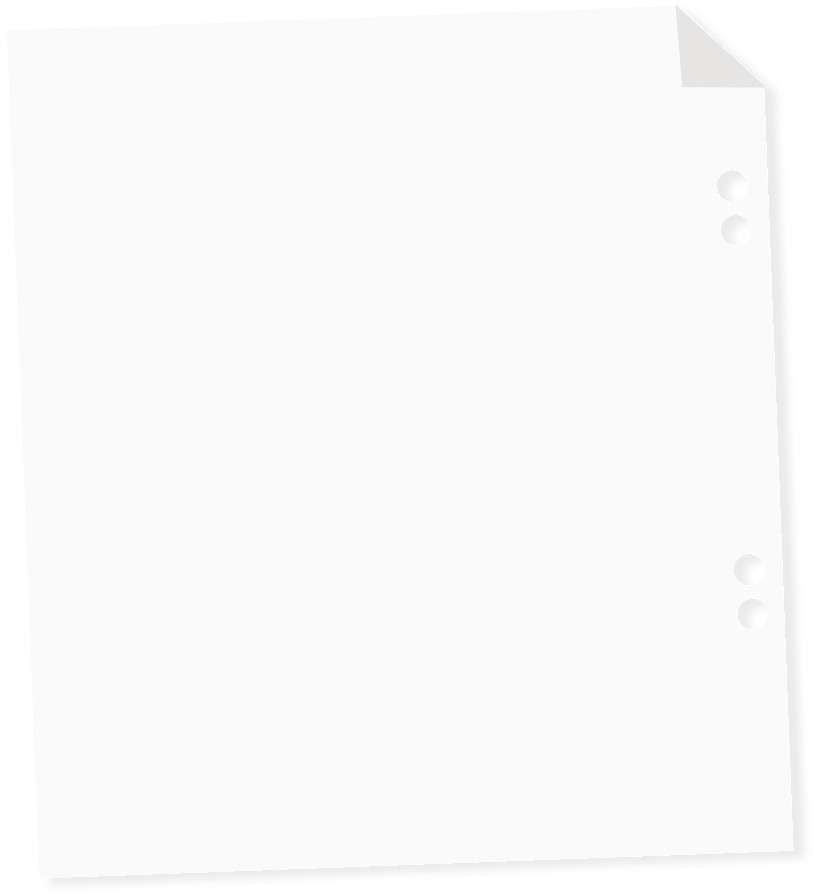
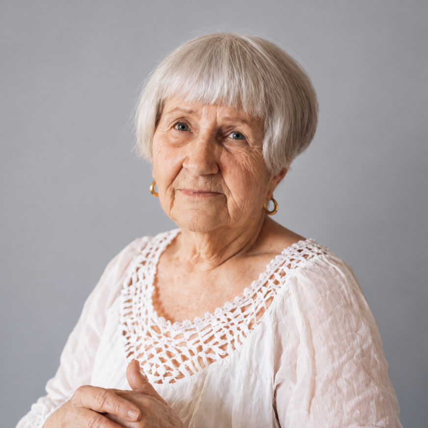
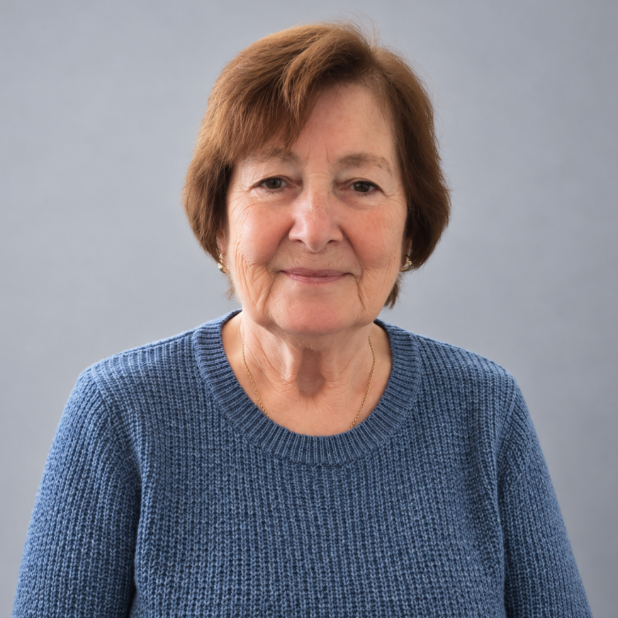

01 / 04
Вера, 67 лет
Инженер-конструктор
Когда команда перешла на новую программу проектирования, Вера записалась на курс и собрала свою первую модель. Теперь она помогает коллегам проверять сложные узлы — опыт и новые инструменты работают вместе.
02 / 04Галина переводит привычные процессы в электронный формат, ведёт отчётность и обучает новых сотрудников. Она ищет не «работу по возрасту», а задачи, в которых пригодятся её знания и внимательность.
03 / 04
Наталья, 58 лет
Координатор проектов
После многих лет на производстве Наталья решила заняться координацией проектов. Она изучила новые инструменты планирования, а умение договариваться и доводить дело до конца взяла с собой.
04 / 04
Михаил, 62 года
Наставник технической команды
Михаил помогает новичкам разбираться в оборудовании, а у них учится цифровым инструментам. В этой команде обмен опытом идёт в обе стороны — без деления на тех, кому «рано», и тех, кому «поздно».